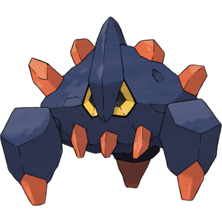
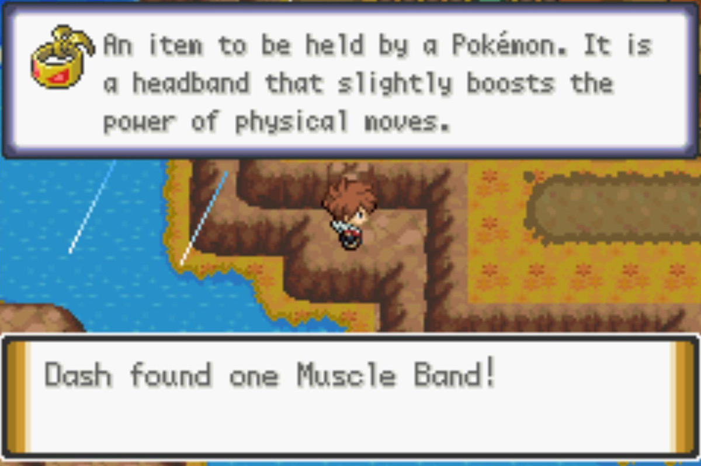

Quick Guide:
- Enter the Antisis Gym
- Take the Ring Challenge and defeat the Antisis Gym Leader
- Obtain Rock Climb Permission
- Explore Lower Icicle Cave
- Discover Icy Hole
Antisis Gym – Ring Badge
The Antisis Gym is a short one, but it is also difficult.
This is because Big Mo, the Gym Leader, has instituted some rules that seem designed to make things hard for us.
| Ring Challenge | |
|---|---|
| Roughneck Riff | |
|
Sawk Fighting (Lv.50) |
 |
| Black Belt Hakawakawak | |
|
Poliwrath Water/Fighting (Lv.50) |
|
| Roughneck Griff | |
|
Emboar Fire/Fighting (Lv.50) |
|
You’ll have to beat the Ring Challenge before facing Big Mo, and there are certain rules that must be followed:
- You can only have one Pokémon, and you must fight three trainers with one Pokémon each in a row (this is what the Pokémon Storage Porygon in the setup area is for).
- You must not use Flying-, Psychic-, or Fairy-type moves. Yes, that means every type that is super-effective against Fighting-types is disallowed.
- You can use a full team of Pokémon against Big Mo, but type restrictions may apply.
The goon at the beginning of the challenge will explain the Rules in more detail if you’re unsure – they go into quite a bit of detail.
Ultimately, using a Pokémon that is not weak against Fighting-type moves and that has strong moves of a neutral type is the best bet here.
After the Ring Challenge, you’ll be shown to a far door in the chamber. Head through it, and you’ll find yourself in a back alley.
It turns out that the man who gave you the Devon Scope on Route 16 was Big Mo.
Now it’s time to challenge him for that Ring Badge.
Gym Leader Big Mo
| Gym Leader Big Mo | |
|---|---|
|
Mienshao Fighting (Lv.51) |
|
|
Pangoro Fighting/Dark (Lv.51) |
|
|
Hariyama Fighting (Lv.52) |
 |
|
Lucario (Mega) Electric (Lv.52) |
 |
After You Win
When you beat Big Mo, he’s humble in defeat and gives you TM60 Drain Punch as well as the Badge you need to use Rock Climb.
Now that you can climb to your heart’s content, it’s time to head to a couple areas you couldn’t access before.
Fly to Bellin Town and head north to the entrance of Icicle Cave.
You haven’t explored its lower depths yet, and with Rock Climb, now you can.
Return to Icicle Cave
{kind=link}
| Points of Interest | |
|---|---|
 |
Skier Charlie |
 |
Skiers Club Battles |
 |
Cave Balcony Access |
 |
Boulder Hole |
 |
Boulder Landing |
| Exits and Passages | |
|---|---|
 
|
Ladder Up to Icicle Cave 2F Central Pond |

|
Ladder Up to Icicle Cave 2F West Pond |
 |
Ladder Down to B1F Ice Floor |
 |
Ladder Up to 1F Ice Floor |
Items
| Items | |
|---|---|
| 1F | |
|
Ice Stone (hidden) |
|
| Full Restore | |
| Calcium | |
| Dusk Ball | |
| Moon Stone | |
| Wise Glasses | |
|
Blue Shard (hidden) |
|
|
Rose Incense (on balcony outside) |
|
| B1F | |
| Escape Rope | |
| TM69 Rock Polish | |
| PP Up | |
| Elixir | |
|
Big Pearl (hidden) |
|
Wild Pokémon
| Wild Pokémon | |
|---|---|
| Cave | |
|
Golbat Poison/Flying |
 |
|
Hariyama Fighting |
|
|
Sealeo Ice/Water |
 |
|
Jynx Ice/Psychic |
|
|
Avalugg Ice |
|
|
Boldore Rock |
 |
|
Piloswine Ice/Ground |
|
Trainers
| Trainers | |
|---|---|
| Skier Charlie | |
|
Delibird Ice/Flying (Lv.50) |
|
|
Aerodactyl Rock/Flying (Lv.51) |
|
|
Noivern Flying/Dragon (Lv.49) |
 |
Icicle Cave – 1F
To get to the new section of the first floor of Icicle Cave, head to the north part of 2F. You’ll see a Rock Climb wall leading down to a lake in the middle of the cavern. Cross it with Surf.
There’s a ladder on the other side of the lake – take that down and you’ll be in the new chamber.
The lower levels of Icicle Cave are full of ice sliding puzzles!
There are two puzzles on 1F – the complicated north one and the simple south one. Start with the north one first.
First Puzzle
Here’s the solution:
{kind=link}
There are a lot of items to collect in this puzzle and an alternate trainer to fight. Note that this puzzle is also optionally skippable, but it is worth doing for what you can get.
If you just want to skip to the big reward, here’s the solution to the direct route:
- North (from the left tile)
- East
- North
- East
- North
- West (pick up the item)
- South
- West
- South
- East
- North
- East
- South
- West
- South
- West
- North
- West
- North
- East
- South
Following those instructions, you’ll find yourself on an icy outcrop filled with ladies dressed in pink.
They’re the Skiers Club, and they’re the route master challenge for Icicle Cave.
You’ll first need to beat Skiers Anna and Ruby in a Double Battle, and once they’re defeated, Club President Lily steps up to challenge you herself.
| Skiers Club Battles | |
|---|---|
| Skiers Anna and Ruby | |
|
Sealeo Ice/Water (Lv.51) |
|
|
Avalugg Ice (Lv.51) |
|
|
Alolan Vulpix Ice (Lv.49) |
|
|
Aurorus Rock/Ice (Lv.51) |
|
|
Froslass Ice/Ghost (Lv.51) |
 |
| Mega Trainer Lily | |
|
Abomasnow Grass/Ice (Lv.49) |
|
|
Alolan Ninetales Ice/Fairy (Lv.51) |
 |
|
Glalie (Mega) Ice (Lv.52) |
|
You decline membership in the Skiers Club and receive a Glalitite in reward.
Then if you’re all set with this part of the chamber, return to the ladder where you started.

Second Puzzle
Compared to the northern puzzle, the southern puzzle really isn’t much of a puzzle at all, and is straightforward enough.
If you’re having trouble though, follow this:
- South (from the easternmost tile)
- East
- North
- East
You’ll end up on an outcrop with a Strength boulder on it.
Push the boulder out of your way and smash all of the rocks ahead of you so you have a clear path.
Then, push the Strength boulder north – though not all the way to the edge – leave one space.
This way, you can push the boulder south into the hole.
Once you do that, jump in after it, and you’ll end up on B1F.
Icicle Cave – B1F
Pushing the boulder makes it possible to reach the TM in this lower level, along with a couple other items.
{kind=link}
From your starting position:
- South
- West
- South
- West
- North
- East
- North
- East

The TM ball will be in reach, and it’s one of the most powerful moves in the game – TM14 Blizzard.
You can now chase after any of the other items in the map above, or when you’re ready to move forward then make your way to the exit ladder to the west. This will have you pop up in a slightly different part of 2F that you explored with Surf.
Leaving the Cave
Leave Icicle Cave when you’re ready – an Escape Rope might work best here – and head back to Bellin Town.
South of Bellin Town is a rocky wall that you can climb down to access a whole new cavern system – this is Icy Hole.
Icy Hole
{kind=link}
| Points of Interest | |
|---|---|
|
Clown Push |
|
Raid Den |
|
Regigigas Statue |
| Exits and Gates | |
|---|---|
 |
(west) Bellin Town |
|
(east) Bellin Town |
|
Ladder Down to Lower Icy Hole |
|
Ladder Up to Upper Icy Hole |
Items
| Items | |
|---|---|
| Ice Stone | |
| Zygarde Cell |  |
|
Bright Powder (hidden) |
|
The first floor of Icy Hole is simple enough – head northeast to an icy floor, where you’ll spot a Clown.
Slide across the icy floor and make sure you’re just north of the Clown when you speak to him.
Helping the Clown
This Clown is stuck, and needs a bit of a push off the ice. Here’s how to help him:
- Push the Clown down
- Slide left to the wall
- Slide down to the corner
- Slide east to the clown and push
With that out of the way, the Clown gives you TM07 Hail as thanks.
There’s an exit to the south, but it just leads back to Bellin Town as a bit of a shortcut. Head north instead, surfing across a small pond, until you get to a ladder.
Exploring B1F
The ladder leads down to the basement, and there are a couple of things of use here.
There’s a Raid Den here, as well as what looks like the legendary titan Regigigas.
However, it’s just a statue – for now. Make a note of its location, the inscription may be useful later.
Rock Climb Backtracking (Optional)
With Icicle Cave and Icy Hole explored, there are a number of other places you can go now with Rock Climb, scattered all over Borrius.
These are optional Rock Climb locations but they do have some pretty rare items worth getting! Here’s a list of worthy backtrack spots:
| Rock Climb Backtracking Locations | ||
|---|---|---|
| Route 3 | ||
| Leftovers | Northeast, above the beach | |
| Cinder Volcano 3F East | ||
|
Power Herb (hidden) |
On the southern bank of the west lake | |
| TM38 Fire Blast | On the extra section of West 3F accessible from a ladder in East 4F | |
| Cinder Volcano Depths B1F | ||
| Red Flute | Above northwest chamber entrance | |
| Crater Town | ||
| Black Flute | Above the Gym | |
| Valley Cave B1F | ||
| Nugget | Northwest side | |
| Dusk Stone | Southwest section | |
| Revival Herb | Southeast, tablet area | |
| TM101 Power-Up Hit | Press the button near the Ranger with a Bug Pokémon in first slot; then go to where the Tablet used to be | |
| Lunalium Z | Inside the cavern the Tablet turned into | |
| Route 7 | ||
| Zygarde Cell | Top of the central hill | |
| Frost Mountain 1F | ||
| TM79 Dark Pulse | Southwest corner | |
| Zygarde Cell | Climb the rocks north of the Hiker, go up ladder to 2F | |
| Full Incense | Near the Painter | |
| Dusk Stone | Near the Tablet, northwest corner | |
| Solganium Z | Go to the southeast corner and approach the Aggron from behind; inside the Raid Den revealed when the Tablet is destroyed | |
| Rare Bone | East side | |
| King’s Rock | Southeast corner | |
| Frost Mountain 2F | ||
| TM80 Rock Slide | East side, under the bridge | |
| White Herb | Central hill | |
| Route 8 | ||
| Zygarde Celll | East frozen pool | |
| Zygarde Cell | On an island in the middle of the route | |
| Frozen Forest | ||
| Abomasite | On top of the Crabominable nest | |
| Route 10 | ||
| Medichamite | Defeat Mega Trainer Ernesto, southeastern cliff | |
| Muscle Band | Below Camper Chris |  |
| Route 11 and Cliff Cave | ||
| Max Elixir | Right side of Cliff Cave entrance | |
| Calcium | Inside Cliff Cave off that landing | |
| Nugget | Inside Cliff Cave first cavern | |
| Dusk Stone | Right side of Cliff Cave entrance | |
| TM65 Shadow Claw | On Route 11 West | |
| Zygarde Cell | On Route 11 West | |
|
Electric Seed (hidden) |
On Route 11 West | |
| Alakazite | Defeat Mega Trainer Timothy, on Route 11 West cliffs, after defeating all Route 11 trainers | |
| Dehara City | ||
| Protect Pads | In the entrance area, up a cliff | |
| Route 12 | ||
| Max Revive | Near the Dehara City gate, northwest cliff | |
| Great Desert | ||
| TM26 Earthquake | Northeast side of Tomb of Borrius entrance | |
| Max Revive | Northeast side of Tomb of Borrius entrance | |
| Scizorite | Defeat Mega Trainer Travon, above the canyon with the clown | |
| Route 13 | ||
| TM51 Roost | Rocky island near Ocean Master | |
|
Big Pearl (hidden) |
Rocky island near Ocean Master | |
| Route 14 | ||
| TM83 Scald | Top of the wall on the western side of the route | |
| Route 6 | ||
| TM74 Gyro Ball | Northwest side, accessed by Surf | |
| Route 15 | ||
| Absorb Bulb | Top of the center island | |
| Route 15 | ||
| Ultra Ball | South of the Beauty | |
| TM11 Sunny Day | Show the Clown a Solrock or Solgaleo | |
| Zygarde Cell | Antisis City side cliffs | |
Moving Forward

There’s one last place to go to Rock Climb in a useful way, and that’s Thundercap Mountain. However, now that you’ve been to Antisis City, you can access a whole new side and section of the mountain.
Fly back to Antisis City and head west across the bridge for the next leg of the journey.